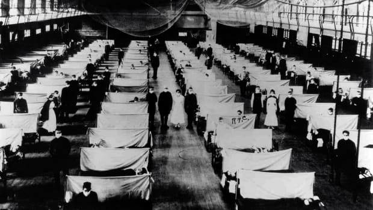

The first wave of the 1918 pandemic occurred in the spring and was generally mild. The sick, who experienced such typical flu symptoms as chills, fever and fatigue, usually recovered after several days, and the number of reported deaths was low. However, a second, highly contagious wave of influenza appeared with a vengeance in the fall of that same year. Victims died within hours or days of developing symptoms, their skin turning blue and their lungs filling with fluid that caused them to suffocate. In just one year, 1918, the average life expectancy in America plummeted by a dozen years.
Symptoms of the flu include sudden onset fever, coughing, sneezing, a runny nose, and severe malaise, though it can also include vomiting, diarrhea and nausea. Influenza has plagued humankind for centuries and, given its highly variable nature, may continue to do so for centuries to come.